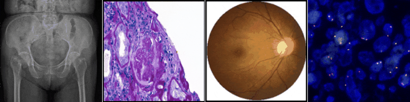

Welcome to CIFLAB
An enthusiastic team at NYCU focuses on medical image analysis and bioinformatics

Description
Medical image analysis
Our laboratory cooperates with physicians in many hospitals to develop algorithms suitable for various medical images. The images we analyzed include X-ray, CT, endoscopic, fundus image and pathological image. Current research would focus on auxiliary learning, federated learning, semi-supervised learning and graph convolutional networks.
Bioinformatics
We focus on adopting various AI models for pharmacogenomics analysis. Here different cancer omics data (expression, mutation, copy number, etc.), and the information of drug chemical/molecular fingerprints and biological pathways are properly encoded to extract useful characteristics for predicting drug response and investigating drug repositioning.
Recently research topics
- Trauma detection through X-ray
This project focuses on X-ray image classification and lesion detection. Our final goal is to develop a comprehensive model which can detect trauma in any type of X-ray.
- STAS detection
Develop a computer-aided diagnostic tool which can help pathologists find STAS in pathology images based on deep learning object detection models.
- Glomerulus segmentation
- Diabetic retinopathy detection through fundus
This study aims to evaluate the effectiveness of semi-supervised learning in medical imaging by analyzing diabetic retinopathy. Some visualization method such as saliency map has been adopted for the second confirmation.
Information
Lab publication: https://github.com/NYCUciflab/Publication
Email: ifchung@nycu.edu.tw
Languages and Tools: